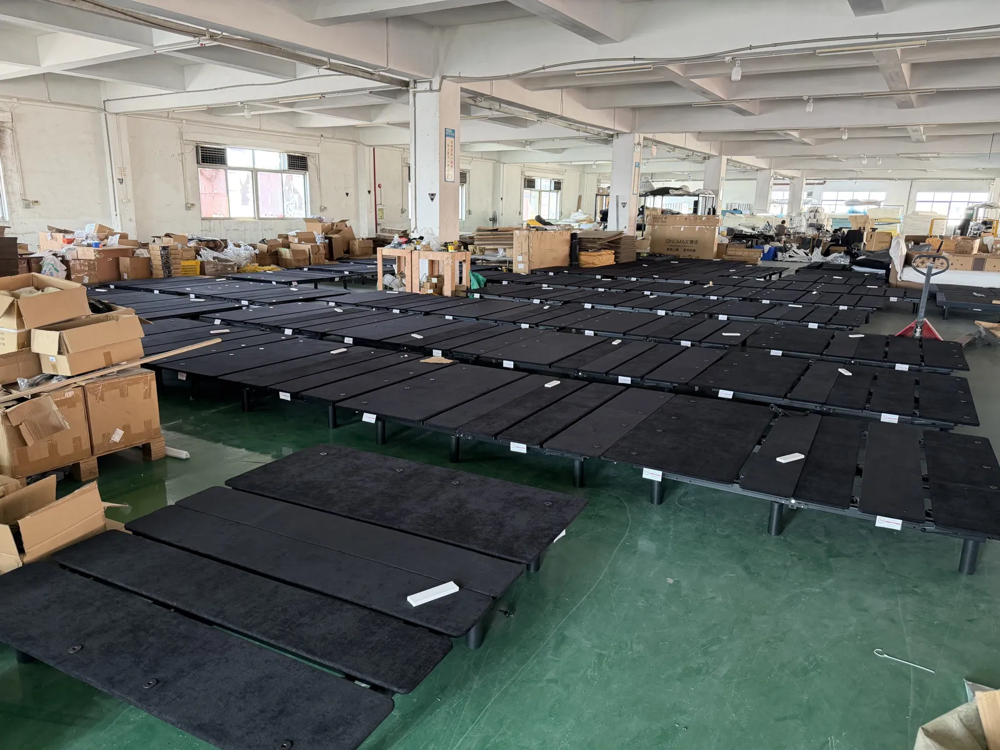

Dongguan, China
From steel section to finished frame.
Short narrated clips from the Kang Cai workshop, in the order the frame parts move through it. Each video loads only when you press play.
Step 1
Cutting steel sections
Frame parts start as steel sections cut to length on the cutting machine.
Step 2
Stamping
Presses form the metal components that become the frame structure.
Step 3
Assembly and finishing
Operators assemble the sections on a jig, then cut and grind them to finish.
Step 4
Parts and materials
Cut tube parts are sorted by hand, and boards and soft materials are prepared on their own worktable.
Step 5
Staging in the hall
Finished frame sections are stacked in the main hall between stations.
On the Floor
Photos from the same hall.
Frame assembly, grinding and stacked frame sections.


Build With Kang Cai
Bring the market brief. We’ll map the product route.
Share the category, quantity, destination and required functions to start a practical OEM/ODM discussion.